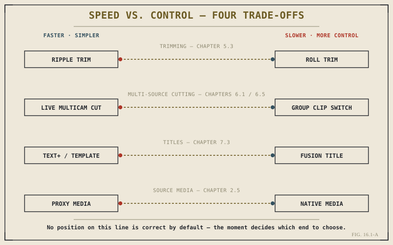

Chapter 15.5 closed Part XV with a list of the mistakes that trip up almost every editor learning Resolve — habits that create real, avoidable problems, paired with the fix for each. That list is worth keeping close for as long as you're still capable of making those mistakes. But avoiding mistakes was never the ceiling of this book, and it isn't the ceiling of editing skill either. Once a technique has stopped causing you trouble, a harder and more interesting question replaces "am I doing this correctly": which of the several correct ways of doing this actually fits what I'm doing right now. That question is what this closing part, and this chapter specifically, is actually about.
"Correct" Was Almost Never the Right Word
Look back across the fifteen parts before this one and a pattern emerges that's easy to miss chapter by chapter: this book has almost never presented a single correct way to accomplish something. Chapter 5.3 covered ripple and roll trims side by side, not because one has since been deprecated in favor of the other, but because they solve genuinely different problems. Chapter 6.5 spent an entire chapter arguing that Group Clips aren't a lesser version of multicam — they're the right tool for a different situation multicam doesn't fit. Chapter 7.3 walked through Text+, title templates, and full Fusion titles as three separate, coexisting options rather than three stages of the same feature. Even Chapter 2.5's proxies weren't framed as something you should always or never generate. Each of these chapters, read carefully, was already teaching this one.
A Short Inventory of the Book's Recurring Trade-Offs
It's worth naming a few of these plainly, because seeing them side by side makes the pattern impossible to miss. A ripple trim moves fast and reshapes everything downstream automatically; a roll trim moves slower but touches only the two clips at the cut point. A live multicam pass builds a complete rough structure in one watch-through; a Group Clip trades that live-viewer speed for a simpler, deliberate, one-at-a-time comparison better suited to alternate takes. A Text+ title sets up in seconds with modest control; a Fusion title takes real time to build but offers control Text+ was never designed to provide. Proxy media keeps playback smooth on demanding footage; native media guarantees you're always looking at your actual source, at the cost of whatever performance headroom your system doesn't have to spare.

Four recurring trade-offs from earlier chapters, each sitting on the same faster-versus-more-control spectrum.
None of these pairs has a permanently better half. A ripple trim isn't a shortcut version of a roll trim, and a Fusion title isn't simply what a Text+ title becomes when you have more time. Each one is the right answer to a specific set of conditions — and the wrong answer the moment those conditions change.
Reading the Situation, Not the Manual
If neither option in any of these pairs is universally correct, the actual skill has to live somewhere else: in reading the situation accurately enough to know which option it calls for. That reading depends on signals this book has touched on throughout but rarely named directly — how much time you actually have, as Chapter 3.5 raised when weighing Cut against Edit; how demanding the footage is relative to the machine you're cutting on, which Chapter 2.5 and the forthcoming Part XIII both bear on; whether the work will pass through other hands, which changes how much a choice needs to be self-explanatory to someone who isn't you; and simply how much precision a given cut or title genuinely needs, as opposed to how much precision would merely feel more careful. None of these signals point to one tool being generally superior. They point to a specific tool being right for this shot, this deadline, this footage, this project.
Trade-Off Awareness Is the Actual Definition of Mastery
This is worth stating plainly, because it's the thesis the rest of Part XVI builds on: genuine editing mastery in Resolve isn't knowing that ripple trims, multicam clips, Fusion titles, and proxy workflows exist. Every chapter of this book has already given you that knowledge. Mastery is being able to feel, quickly and often without conscious deliberation, which side of each trade-off a given moment is asking for — and then actually being capable of executing that choice without it costing you noticeably more time than the "easier" option would have. That second half matters as much as the first, and it's exactly where this chapter runs out and Chapter 16.2 picks up: trade-off judgment is worthless if your hands are only fast with one side of every pair. Building genuine speed with more than your default habits — and shaping a keyboard layout deliberately enough to support that — is the next piece of becoming the kind of editor this closing part is describing.
Key Concepts to Remember
- Almost nothing in this book was presented as a single correct method — most chapters covered genuine trade-offs, not a right way and a wrong way.
- Ripple vs. roll, multicam vs. Group Clips, Text+ vs. Fusion titles, and proxy vs. native media are the same pattern repeated across different parts of the book.
- Choosing correctly depends on reading the situation — time available, footage demands, collaboration needs, and how much precision a moment actually requires.
- Mastery means being fast enough with more than one side of each trade-off that the choice is never made by habit alone.
Cross-References Forward
| → Ch. 16.2 | Building Muscle Memory and Custom Keyboard Layouts — the speed this chapter's trade-off judgment depends on. |
| → Ch. 2.5 | Revisit proxies and native media, one of this chapter's four recurring trade-off pairs, in its original technical detail. |
| → Ch. 7.3 | Revisit Text+, templates, and Fusion titles now that the trade-off between them has a name. |